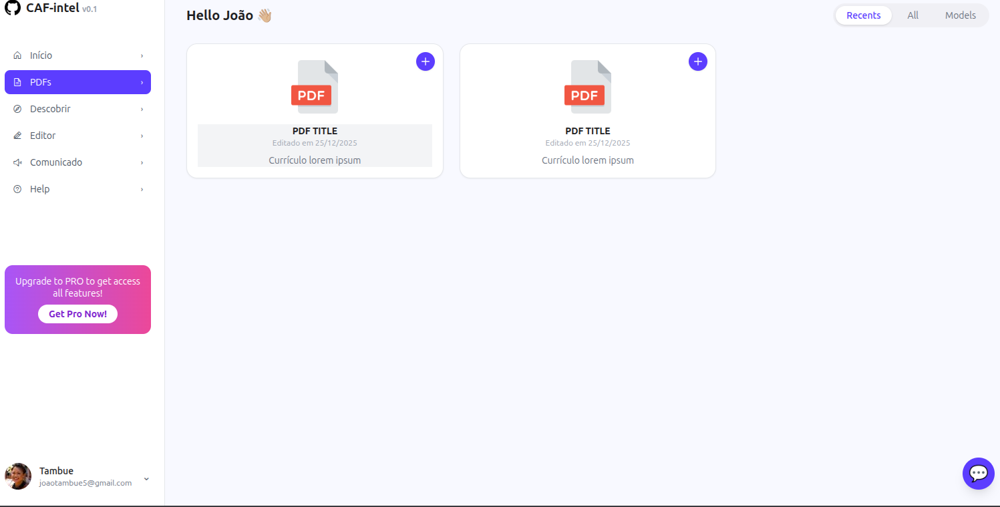
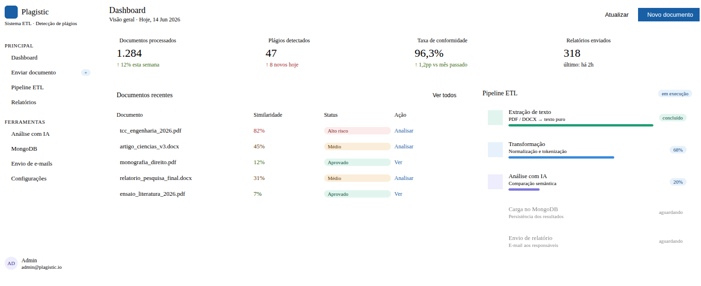
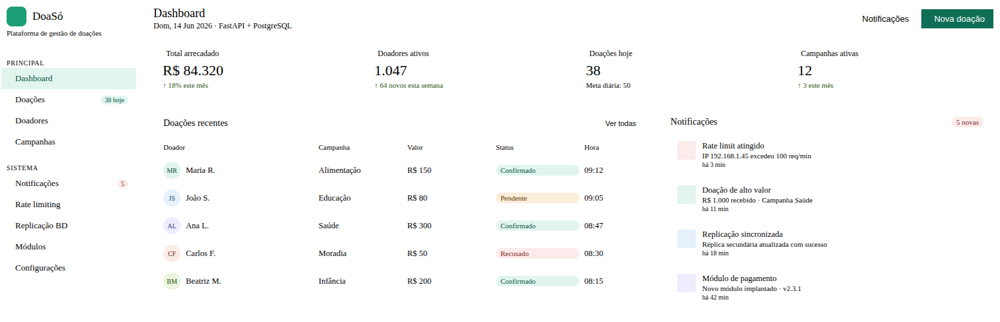
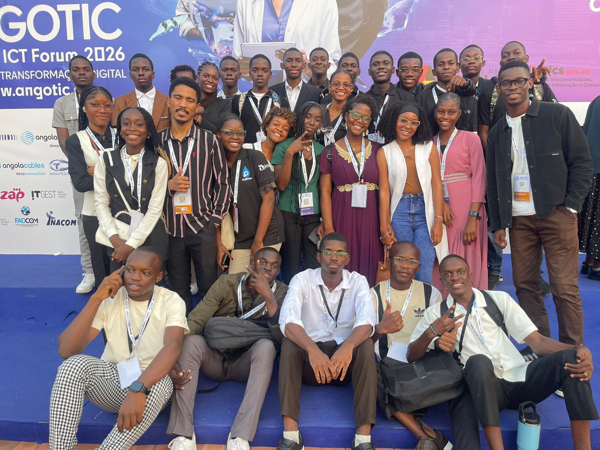
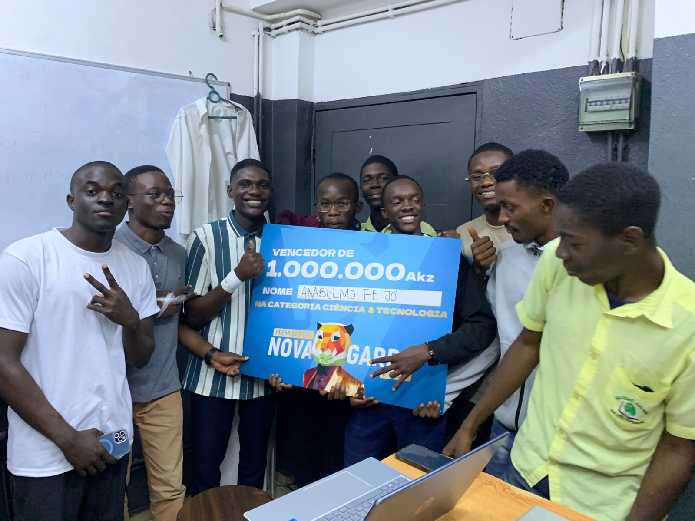
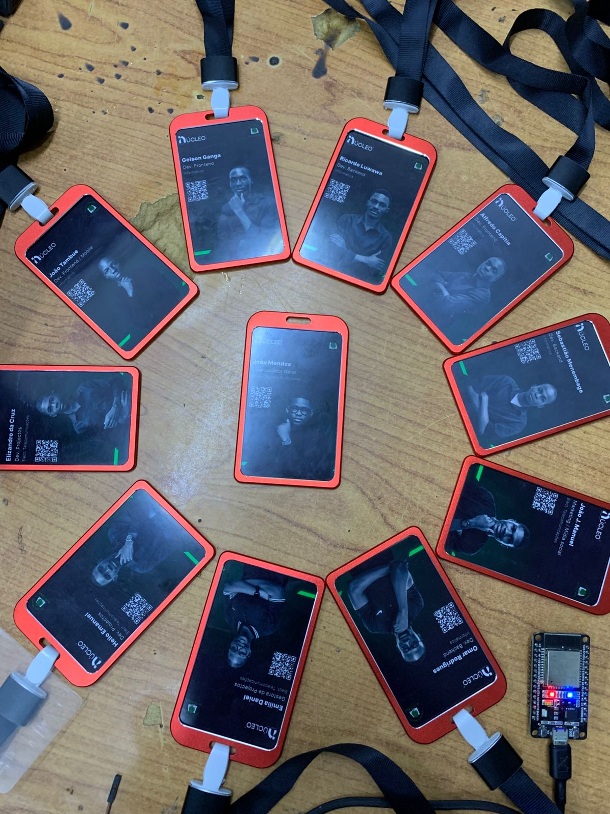

Gomes Menembage
Construo os sistemas que impulsionam o produto_
APIs de alto desempenho, bancos de dados sob medida e arquitetura backend que escala — tudo pensado para transformar requisitos em soluções sólidas.
Quem sou
Especializo-me na construção de sistemas backend robustos e na gestão de infraestrutura de dados em escala.
Meu trabalho vive em APIs, bancos de dados e nas camadas invisíveis que tornam os produtos confiáveis.
Preocupo-me com desempenho, arquitetura limpa e sistemas fáceis de manter.
Tecnologias com que trabalho
Como transformo ideias em sistemas reais
Análise
Entendo o problema, mapeio requisitos e identifico restrições antes de escrever uma linha de código.
Modelagem
Desenho o schema de dados, relações e fluxos para garantir que a base seja sólida e escalável.
Arquitetura
Defino a estrutura do sistema, escolho as ferramentas e organizo camadas para máxima performance.
Desenvolvimento
Codifico cada módulo com foco em performance, segurança e boas práticas do início ao fim.
Validação
Testo cada funcionalidade, realizo code review e asseguro que o sistema atende aos requisitos.
Entrega
Implanto em produção com CI/CD, monitore o lançamento e garanto uma transição suave.
Escala
Otimizo performance, ajusto recursos e preparo a arquitetura para crescer sem perder estabilidade.
Projetos em destaque
6 projetosPlataforma de apoio a mamãs lavadeiras com autenticação, notificações e chamadas na aplicação.
Plataforma de recomendação de mentores com inteligência artificial e pesquisa semântica.

Plataforma de apoio estudantil com geração de PDFs, chat de SMS e bot inteligente.

Gerador de trabalhos académicos com IA, pesquisa semântica e formatação automática de texto.

Sistema ETL de detecção de plágios em documentos com extração de texto e integração com IA.

Plataforma de gestão de doações com arquitectura modular, notificações e replicação de base de dados.
Núcleo Tecnológico — CAF
Atuei no Núcleo Tecnológico do CAF onde liderei o time backend como Team Líder Backend, responsável pela arquitetura das APIs, revisão de código, definição de padrões técnicos e coordenação do time de desenvolvimento.
Como DBA, administrei e otimizei bancos de dados relacionais, realizei tuning de queries, modelagem de dados, migrações e garanti a integridade e desempenho das bases.
Como Backend Developer, desenvolvi microsserviços, integrações com APIs externas, filas de processamento assíncrono e dashboards de monitoramento.



O que posso fazer por você
"Já trabalhei com vários backends na minha carreira, mas poucos têm o nível de raciocínio que ele demonstra. Quando o meu lado mobile precisa de dados, estão sempre organizados, rápidos e consistentes. É o tipo de profissional que faz o seu trabalho parecer fácil porque o dele está impecável."
"Como dev backend eu sei o que é difícil nessa área — e ele resolve bem o que já é complexo, e ainda vai além. A forma como ele estrutura bancos de dados é algo que me fez aprender bastante. Não é só técnica, é visão. Sabe exatamente onde cada dado deve estar e porquê."
"Do ponto de vista de gestão, ter um backend e DBA como ele no projeto é uma tranquilidade enorme. Nunca tivemos problemas de performance ou perda de dados. Ele antecipa os problemas antes que eles cheguem à reunião. Isso vale ouro numa equipe."
"O que me chama atenção nele é que não fica preso às soluções convencionais. Na parte de banco de dados especialmente, ele pensa na arquitetura de um jeito que poucos jovens devs pensam. Tem maturidade técnica acima da média."
"Dados nas mãos dele estão seguros. Ele entende o ciclo completo — desde a modelagem do banco até a API que entrega a informação — e isso faz uma diferença brutal no produto final. É raro encontrar alguém que domina backend e banco de dados com essa profundidade."
"Trabalhamos lado a lado no backend e aprendi muito observando a forma como ele organiza as queries e pensa na estrutura do banco. Não é alguém que apenas faz funcionar — é alguém que faz funcionar bem, com consistência e escalabilidade em mente desde o início."
"Do frontend eu dependia muito dele para integrar as APIs, e posso dizer que era sempre uma experiência sem dor de cabeça. Documentação clara, respostas consistentes, dados bem estruturados. Ele é o tipo de backend que todo desenvolvedor frontend sonha em ter do outro lado."
Vamos construir algo juntos
Aberto a vagas backend, consultoria e problemas interessantes de infraestrutura. Entre em contato diretamente.